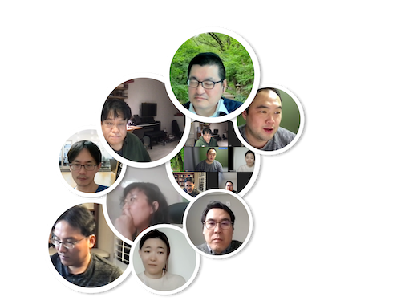

마케팅/고객분석 그룹스터디
1
스터디 기본정보
1.1
미팅 시간과 날자 및 장소
1.2
멤버
1.2.1
Facilitators
1.2.2
Participants
1.3
교재
1.4
스케쥴
2
Session1 - Chapter1 & 2 Welcome to R and Python / An overview of the R and Python Language
2.1
발표자료
2.2
요약
2.3
현장사진
3
Session2 - Chapter3 & 4: Describing Data / Relationships Between Continuous Variables
3.1
발표자료
3.2
요약
3.3
현장사진
4
Session3 - Chapter5 & 6: Comparing Groups:Tables and Visualizations / Comparing Groups: Statistical Tests
4.1
발표자료
4.2
요약
4.3
현장사진
5
Session - Chapter 7&8 Linear Models & Complexity
5.1
발표자료
5.2
요약
5.3
현장사진
6
Session - Chapter9: Additional Linear Modeling
6.1
발표자료
6.2
요약
6.3
현장사진
7
Session - Chapter 10: Confirmatory Factor Analysis and Structural Equation Modeling
7.1
발표자료
7.2
현장사진
8
Session - Chapter 11: Segmentation: Clustering and Classification
8.1
발표자료
8.2
요약
8.3
현장사진
9
Session - Chapter 12 & 13: Association Rules for Market Basket Analysis / Choice Modeling
9.1
발표자료
9.2
요약
9.3
현장사진
10
Session - Chapter 14: Behavior Sequences
10.1
발표자료
10.2
요약
10.3
현장사진
References
Published with bookdown
마케팅/고객 분석 그룹스터디
7
Session - Chapter 10: Confirmatory Factor Analysis and Structural Equation Modeling
채충일
7.1
발표자료
챕터요약
코드
7.2
현장사진

Please enable JavaScript to view the
comments powered by Disqus.